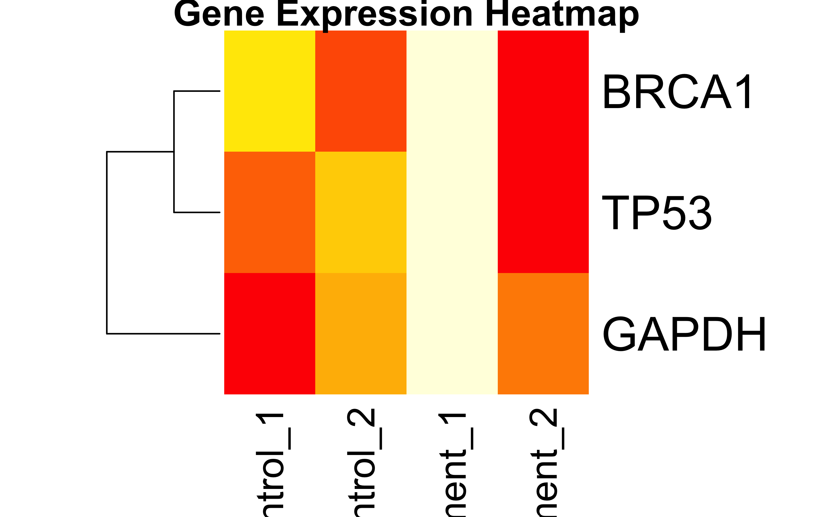
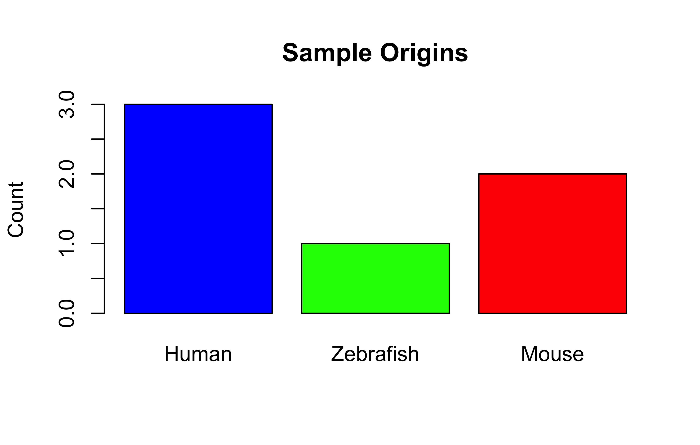
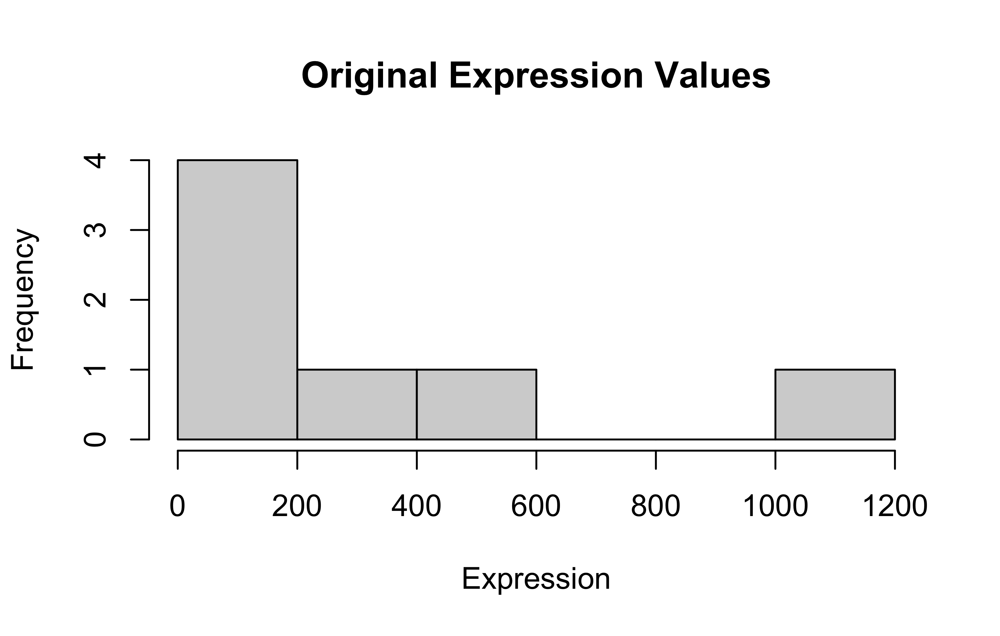
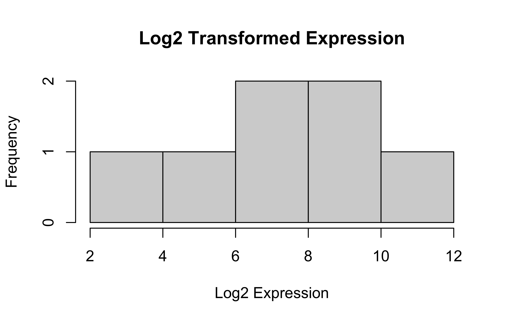
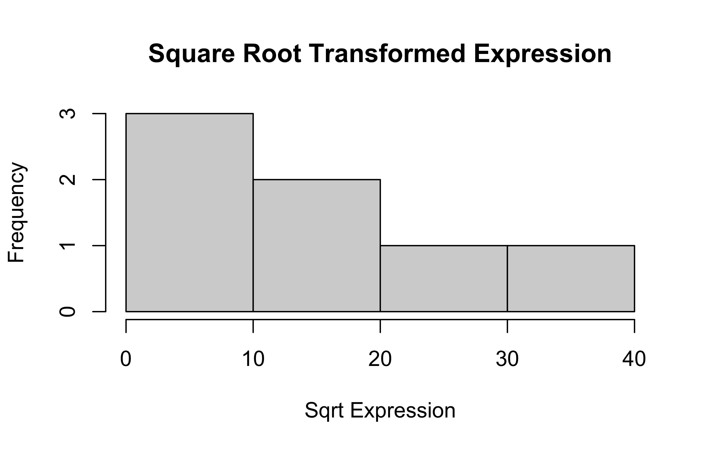
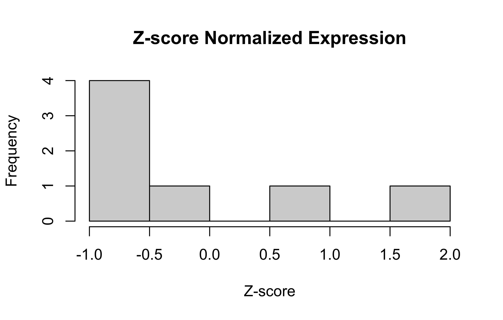

DNA<-c("A", "T", "G", "C")#character vector. Notice the quotation marks.dec<-c(10.0, 20.5, 30, 60, 80.9, 90, 100.7, 50, 40, 45, 48, 56, 55)#vector of floats. All numbers became floats, it's called coerciondec[c(1:3, 7:length(dec))]#1st to 3rd and then 7th till the end of vector `dec`. Output as a vector.
Nested functions work inside out. Think again about round(log2(x), 1) and you will see it. At first, it is making log2 of vector x and then it is rounding the log2 values to one digit after decimal. Got it?
Data Frame
Now, it’s time to use vectors to make data sets…..
We made the vectors first, and the used them to make the cartton data frame or table. We learned how to export the data frame using write.table function. Also, we learned to import or read back the table using read.table function. What are the sep, col.names, header arguments there? Why do we need them? Think. Try thinking of different properties of a data set.
Here, we directly used the vectors as different columns while making the data frame. Did you notice that? Also, the syntax is different here. We can’t assign the vectors with the assignment operator (means we can’t use <- sign. We have to use the = sign). Try using the <- sign. Did you notice the column names?
Homeworks
Compute the difference between this year (2025) and the year you started at the university and divide this by the difference between this year and the year you were born. Multiply this with 100 to get the percentage of your life you have spent at the university.
Make different kinds of variables and vectors with the data types we learned together.
What are the properties of a data frame?
Hint: Open an excel/csv/txt file you have and try to “generalize”.
Can you make logical questions on the 2 small data sets we used? Try. It will help you understanding the logical operations we tried on variables. Now we are going to apply them on vectors (columns) on the data sets. For example, in the cartoon data set, we can ask/try to subset the data set filtering for females only, or for both females and age greater than 2 years.
If you are writing or practicing coding in R, write comment for each line on what it is doing. It will help to chunk it better into your brain.
Push the script and/or your answers to the questions (with your solutions) to one of your GitHub repo (and send me the repo link).
Deadline
Friday, 10pm BD Time.
L3: Data Transformation
Firstly, how did you solve the problems?
Give me your personal Mindmap. Please, send it in the chat!
Getting Started
Installation of R Markdown
We will use rmarkdown to have the flexibility of writing codes like the one you are reading now. If you haven’t installed the rmarkdown package yet, you can do so with:
# Install rmarkdown package#install.packages("rmarkdown")library(rmarkdown)# Other useful packages we might use#install.packages("dplyr") # Data manipulationlibrary(dplyr)#install.packages("readr") # Reading CSV fileslibrary(readr)
Remove the hash sign before the install.packages("rmarkdown"), install.packages("dplyr"), install.packages("readr") if the library loading fails. That means the package is not there to be loaded. We need to download/install first.
# Clear environmentrm(list =ls())# Check working directorygetwd()# Set working directory if needed# setwd("path/to/your/directory") # Uncomment and modify as needed
RV is so fundamental of an idea to interpret and do better in any kind of data analyses. But what is it? Let’s imagine this scenario first. You got 30 mice to do an experiment to check anti-diabetic effect of a plant extract. You randomly assigned them into 3 groups. control, treat1 (meaning insulin receivers), and treat2 (meaning your plant extract receivers). Then you kept testing and measuring. You have mean glucose level of every mouse and show whether the mean value of treat1 is equal to treat2 or not. So, are you done? Not really. Be fastidious about the mice. What if you got some other 30 mice? Are they the same? Will their mean glucose level be the same? No, right. We would end up with different mean value. We call this type of quantities RV. Mean, Standard deviation, median, variance, etc. all are RVs. Do you see the logic? That’s why we put this constraint and look for p-value, confidence interval (or CI), etc. by (null) hypothesis testing and sample distribution analyses. We will get into these stuffs later. But let’s check what I meant. Also ponder about sample vs population.
Let’s download the data first.
# Download small example datasetdownload.file("https://raw.githubusercontent.com/genomicsclass/dagdata/master/inst/extdata/femaleControlsPopulation.csv", destfile ="mice.csv")# Load datamice<-read.csv("mice.csv")
# Calculate fold change (Treatment vs Control)control_means<-rowMeans(expr_matrix[, 1:2])treatment_means<-rowMeans(expr_matrix[, 3:4])fold_change<-treatment_means/control_meansfold_change
BRCA1 TP53 GAPDH
1.047619 1.019324 1.161290
# Matrix visualization# Heatmap of expression dataheatmap(expr_matrix, Colv =NA, # Don't cluster columns scale ="row", # Scale by row (gene) col =heat.colors(16), main ="Gene Expression Heatmap")

Basic Stuffs: List
Lists are the most flexible data structure in R - they can hold any combination of data types, including other lists! This makes them essential for biological data analysis where we often deal with mixed data types.
# A list storing different types of genomic datagenomics_data<-list( gene_names =c("TP53", "BRCA1", "MYC"), # Character vector expression =matrix(c(1.2, 3.4, 5.6, 7.8, 9.1, 2.3), nrow=3), # Numeric matrix is_cancer_gene =c(TRUE, TRUE, FALSE), # Logical vector metadata =list(# Nested list! lab ="CRG", date ="2023-05-01"))
How to Access Elements of a List?
# Method 1: Double brackets [[ ]] for single elementgenomics_data[[1]]# Returns gene_names vector
[1] "TP53" "BRCA1" "MYC"
# Method 2: $ operator with names (when elements are named)genomics_data$expression# Returns the matrix
[,1] [,2]
[1,] 1.2 7.8
[2,] 3.4 9.1
[3,] 5.6 2.3
# Method 3: Single bracket [ ] returns a sublistgenomics_data[1:2]# Returns list with first two elements
patient_data<-list( id ="P1001", tests =data.frame( test =c("WBC", "RBC"), value =c(4.5, 5.1)), has_mutation =TRUE)
Common List Operations
# Add new elementgenomics_data$sequencer<-"Illumina"# Remove elementgenomics_data$is_cancer_gene<-NULL# Check structure (critical for complex lists)str(genomics_data)
List of 4
$ gene_names: chr [1:3] "TP53" "BRCA1" "MYC"
$ expression: num [1:3, 1:2] 1.2 3.4 5.6 7.8 9.1 2.3
$ metadata :List of 2
..$ lab : chr "CRG"
..$ date: chr "2023-05-01"
$ sequencer : chr "Illumina"
By the way, how would you add more patients?
# Add new patientpatient_data$P1002<-list( id ="P1002", tests =data.frame( test =c("WBC", "RBC", "Platelets"), value =c(6.2, 4.8, 150)), has_mutation =FALSE)# Access specific patientpatient_data$P1001$tests
NULL
For Batch Processing:
patients<-list(list( id ="P1001", tests =data.frame(test =c("WBC", "RBC"), value =c(4.5, 5.1)), has_mutation =TRUE),list( id ="P1002", tests =data.frame(test =c("WBC", "RBC", "Platelets"), value =c(6.2, 4.8, 150)), has_mutation =FALSE))# Access 2nd patient's WBC valuepatients[[2]]$tests$value[patients[[2]]$tests$test=="WBC"]
# Base R plot from list databarplot(unlist(genomics_data[2]), names.arg =genomics_data[[1]])
This code won’t work if you run. unlist(genomics_data[2] creates a vector of length 6 from our 3*2 matrix but genomics_data[[1]] has 3 things inside the gene_names vector. Debug like this:
dim(genomics_data$expression)# e.g., 2 rows x 2 cols
Factors are used to represent categorical data in R. They are particularly important for biological data like genotypes, phenotypes, and experimental conditions.
# Plot factors - Basic barplotbarplot(table(origins_factor), col =c("blue", "green", "red"), main ="Sample Origins", ylab ="Count")

More advanced plot with factors:
gene_expr<-c(5.2, 7.8, 4.5, 12.3, 8.1, 3.7)names(gene_expr)<-as.character(origins)# Boxplot by factorboxplot(gene_expr~origins, col ="lightblue", main ="Gene Expression by Sample Origin", xlab ="Origin", ylab ="Expression Level")
Note
Keep noticing the output formats. Sometimes the output is just a number, sometimes a vector or table or list, etc. Check prop.table(table(origins_factor)). How is it?
Got it?
prop <- prop.table(table(origins_factor)) – is a named numeric vector (atomic vector). prop$Human or similar won’t work. Check this way: prop prop["Human"]; prop["Mouse"]; prop["Zebrafish"]
Or make it a data frame (df) first, then try to use normal way of handling df.
Accessing the Output:
prop<-prop.table(table(origins_factor))prop#What do you see? A data frame? No difference?
origins_factor
Human Mouse Zebrafish
0.5000000 0.3333333 0.1666667
# Handle potential duplicated row names# NOTE: R doesn't allow duplicate row names by defaultdup_genes<-data.frame( expression =c(5.2, 6.3, 5.2, 8.1), mutation =c("Yes", "No", "Yes", "No"))# This would cause an error:# rownames(dup_genes) <- c("BRCA1", "BRCA1", "TP53", "EGFR")# Instead, we can preemptively make them unique:proposed_names<-c("BRCA1", "BRCA1", "TP53", "EGFR")unique_names<-make.unique(proposed_names)unique_names# Show the generated unique names
[1] "BRCA1" "BRCA1.1" "TP53" "EGFR"
# Now we can safely assign themrownames(dup_genes)<-unique_namesdup_genes
expression mutation
BRCA1 5.2 Yes
BRCA1.1 6.3 No
TP53 5.2 Yes
EGFR 8.1 No
Handling Missing/Wrong Values
Identifying Issues
# Create data with missing valuesclinical_data<-data.frame( patient_id =1:5, age =c(25, 99, 30, -5, 40), # -5 is wrong, 99 is suspect bp =c(120, NA, 115, 125, 118), # NA is missing weight =c(65, 70, NA, 68, -1)# -1 is wrong)clinical_data
patient_id age bp weight
1 1 25 120 65
2 2 99 NA 70
3 3 30 115 NA
4 4 -5 125 68
5 5 40 118 -1
colSums(is.na(clinical_data))# Count NAs by column
patient_id age bp weight
0 0 1 1
# Check for impossible valuesclinical_data$age<0
[1] FALSE FALSE FALSE TRUE FALSE
clinical_data$weight<0
[1] FALSE FALSE NA FALSE TRUE
# Find indices of problematic valueswhich(clinical_data$age<0|clinical_data$age>90)
[1] 2 4
Fixing Data
# Replace impossible values with NAclinical_data$age[clinical_data$age<0|clinical_data$age>90]<-NAclinical_data$weight[clinical_data$weight<0]<-NAclinical_data
patient_id age bp weight
1 1 25 120 65
2 2 NA NA 70
3 3 30 115 NA
4 4 NA 125 68
5 5 40 118 NA
# Replace NAs with mean (common in biological data)clinical_data$bp[is.na(clinical_data$bp)]<-mean(clinical_data$bp, na.rm =TRUE)clinical_data$weight[is.na(clinical_data$weight)]<-mean(clinical_data$weight, na.rm =TRUE)clinical_data
patient_id age bp weight
1 1 25 120.0 65.00000
2 2 NA 119.5 70.00000
3 3 30 115.0 67.66667
4 4 NA 125.0 68.00000
5 5 40 118.0 67.66667
# Replace NAs with median (better for skewed data)clinical_data$age[is.na(clinical_data$age)]<-median(clinical_data$age, na.rm =TRUE)clinical_data
Outliers can significantly affect statistical analyses, especially in biological data where sample variation can be high.
# Create data with outliersexpression_levels<-c(2.3, 2.7, 3.1, 2.9, 2.5, 3.0, 15.2, 2.8)boxplot(expression_levels, main ="Expression Levels with Outlier", ylab ="Expression")
Mathematical transformations can normalize data, reduce outlier effects, and make data more suitable for statistical analyses.
# Original datagene_exp<-c(15, 42, 87, 115, 320, 560, 1120)hist(gene_exp, main ="Original Expression Values", xlab ="Expression")

# Log transformation (common in gene expression analysis)log_exp<-log2(gene_exp)hist(log_exp, main ="Log2 Transformed Expression", xlab ="Log2 Expression")

# Square root transformation (less aggressive than log)sqrt_exp<-sqrt(gene_exp)hist(sqrt_exp, main ="Square Root Transformed Expression", xlab ="Sqrt Expression")

# Z-score normalization (standardization)z_exp<-scale(gene_exp)hist(z_exp, main ="Z-score Normalized Expression", xlab ="Z-score")

# Compare transformationspar(mfrow =c(2, 2))hist(gene_exp, main ="Original")hist(log_exp, main ="Log2")hist(sqrt_exp, main ="Square Root")hist(z_exp, main ="Z-score")
Check out this repo: https://github.com/genomicsclass/dagdata/
# Download small example datasetdownload.file("https://github.com/genomicsclass/dagdata/raw/master/inst/extdata/msleep_ggplot2.csv", destfile ="msleep_data.csv")# Load datamsleep<-read.csv("msleep_data.csv")
In-class Tasks:
Convert ‘vore’ column to factor and plot its distribution.
Create a matrix of sleep data columns and add row names.
Find and handle any missing values.
Calculate mean sleep time by diet category (vore).
Identify outliers in sleep_total.
Summary of Today’s Lesson
In today’s class, we covered:
Factor Variables: Essential for categorical data in biology (genotypes, treatments, etc.)
Creation, levels, ordering, and visualization
Subsetting Techniques: Critical for data extraction and analysis
Vector and data frame subsetting with various methods
Using row names effectively for biological identifiers
Matrix Operations: Fundamental for expression data
Creation, manipulation, and biological applications
Calculating fold changes and other common operations
Missing Values: Practical approaches for real-world biological data
Identification and appropriate replacement methods
Data Transformation: Making data suitable for statistical analysis
Log, square root, and z-score transformations
Outlier identification and handling
Logical Operations: For data filtering and decision making
Conditions, combinations, and applications
These skills form the foundation for the more advanced visualization techniques we’ll cover in future lessons.
We will know more about conditionals, R packages to handle data and visualization in a better and efficient way.
List: Fundamental for many biological data and packages’ output.
Properties, accessing, and applications
Homework
Matrix Operations:
Create a gene expression matrix with 8 genes and 4 conditions
Calculate the mean expression for each gene
Calculate fold change between condition 4 and condition 1
Create a heatmap of your matrix
Factor Analysis:
Using the iris dataset, convert Species to an ordered factor
Create boxplots showing Sepal.Length by Species
Calculate mean petal length for each species level
Data Cleaning Challenge:
In the downloaded msleep_data.csv:
Identify all columns with missing values
Replace missing values appropriately
Create a new categorical variable “sleep_duration” with levels “Short”, “Medium”, “Long”
List challenge:
Make your own lists
Replicate all the tasks we did
You may ask AI to give you beginner-level questions but don’t ask to solve the questions programmatically. Tell AI not to provide answers.
Complete Documentation:
Write all code in R Markdown
Include comments explaining your approach
Push to GitHub
Due date: Friday 10pm BD Time
Citation
BibTeX citation:
@online{rasheduzzaman2025,
author = {Md Rasheduzzaman},
title = {Basic {R}},
date = {2025-04-26},
langid = {en},
abstract = {Data types, variables, vectors, data frame, functions}
}
For attribution, please cite this work as:
Md Rasheduzzaman. 2025. “Basic R.” April 26, 2025.
💬 Have thoughts or questions? Join the discussion below using your GitHub account!
You can edit or delete your own comments. Reactions like 👍 ❤️ 🚀 are also supported.
Source Code
---title: "Basic R"abstract: "Data types, variables, vectors, data frame, functions"---<style>.content {text-align: justify!important; } p {text-align: justify!important; }.quarto-body {text-align: justify!important; }</style>```{r}#| include: falsesource(here::here("src/helpersrc.R"))```# L2: Data Representation ## Using R as a Calculator Let's do some basic calculation. ```{r}5+33+23-23*23/2#normal division7%/%2#integer division, only the quotient5%%3#modulus division, the remainder(10-5)*(2+4) #use of parentheses10-5*2+4#Noticed BODMAS?(10-5)*(2+4) #Noticed BODMAS7/(1+3); 7/1+3#multi-line codes, separated with semi-colon1+2; log(1); 1/10#more multi-line codes```## Variables Variables are variable. We have freedom to name them as we wish. But make any variable name meaningful and identifiable. ```{r}a <-5#assign value 5 to a b =10aba <- a +10b = b +15aa^2#a squareda**2#a squared again, in a different way.a^3#a qubed```::: callout-note`<-` and `=` are used to assign values. It is not mathematical equality. `b <- b + 15` might make better sense than `b = b + 15`.:::### Integer and Modulus division again Do some more practice. ```{r}7/37%/%37%%3```## Rounding Some important functions we apply on numerical values ```{r}x <-9/4floor(x)ceiling(x)round(x)round(x, 2) #round till 2 decimal points```## Logical Operations Get to know TRUE/FALSE in R. ```{r}a =5b =7c =10d =3a == b #is a equal to b? Ans: No/FALSEa != b #is a not equal to b? Ans: Yes/TRUEa > b #is a greater than b? Ans: FALSEa < b #is a less than b? Ans: TRUEa >= b #is a greater than or equal to b? Ans: FALSEa <= b #is a less than or equal to b? Ans: TRUEa < b | d > b #is a less than b OR d greater than b?#It's answer will be TRUE OR FALSE --> So, TRUEa < b & c > d #is a less than b AND a greater than b? It's answer will be TRUE AND TRUE --> So, TRUEa < b & d > c #is a less than b AND a greater than b? It's answer will be TRUE AND FALSE --> So, FALSE```## Help and Documentation But how to know more about a function? The package/library developer have written helpful documentation for us. ```{r}?logexample(log)?log()```## Working with Vectors What is a vector? See the example and think. ```{r}x <-c(1, 2, 3, 4, 5) #c means concatenatez <-1:5#consecutively, from 1 through 5. A short-hand notation using :y <-c(3, 6, 9, 12, 15, 20)length(x)mode(x)is(x)x[1] #first entry in vector yx[2:5] #2nd to 5th entries in vector yDNA <-c("A", "T", "G", "C") #character vector. Notice the quotation marks.dec <-c(10.0, 20.5, 30, 60, 80.9, 90, 100.7, 50, 40, 45, 48, 56, 55) #vector of floats. All numbers became floats, it's called coerciondec[c(1:3, 7:length(dec))] #1st to 3rd and then 7th till the end of vector `dec`. Output as a vector.```### Vector Operations Notice the element-wise or index-wise mathematical operations (`+`, `/`, `log2()`, `round()`, etc.). Noticed? ```{r}x <-1:10y <-2:11#x and y are of same lengthx + yy / xlog2(x)round(log2(x), 1) #log2 of all the values of `x`, 1 digit after decimal to round.round(log2(x), 3) #same logic```::: callout-noteNested functions work inside out. Think again about `round(log2(x), 1)` and you will see it. At first, it is making `log2` of vector `x` and then it is rounding the log2 values to one digit after decimal. Got it?:::## Data Frame Now, it's time to use vectors to make data sets..... ```{r}names <-c("Mina", "Raju", "Mithu", "Lali")gender <-c("Female", "Male", "Female", "Female")age <-c(15, 12, 2, 3)is_human <-c(TRUE, TRUE, FALSE, FALSE)cartoon <-data.frame(names, gender, age, is_human)write.table(cartoon, "cartoon.csv", sep =",", col.names =TRUE)df <-read.table("cartoon.csv", header =TRUE, sep =",")dim(df) #`dim` means dimension. so, rows * columnsstr(df) #structure of `df````We made the vectors first, and the used them to make the `cartton` data frame or table. We learned how to export the data frame using write.table function. Also, we learned to import or read back the table using `read.table` function. What are the `sep`, `col.names`, `header` arguments there? Why do we need them? Think. Try thinking of different properties of a data set.### Gene Expression Table ```{r}gene_expr <-data.frame(genes =c("TP53", "BRCA1", "MYC", "EGFR", "GAPDH", "CDC2"),sample1 =c(8.2, 6.1, 9.5, 7.0, 10.0, 12),Sample2 =c(5.9, 3.9, 7.2, 4.8, 7.9, 9),Sample3 =c(8.25, 6.15, 9.6, 7.1, 10.1, 11.9),pathways =c("Apoptosis", "DNA Repair", "Cell Cycle", "Signaling", "Housekeeping", "Cell Division"))write.table(gene_expr, "gene_expr.csv", sep =",", col.names =TRUE)gene_set <-read.table("gene_expr.csv", header =TRUE, sep =",")```::: callout-noteHere, we directly used the vectors as different columns while making the data frame. Did you notice that? Also, the syntax is different here. We can't assign the vectors with the assignment operator (means we can't use `<-` sign. We have to use the `=` sign). Try using the `<-` sign. Did you notice the column names?:::## Homeworks 1. Compute the difference between this year (2025) and the year you started at the university and divide this by the difference between this year and the year you were born. Multiply this with 100 to get the percentage of your life you have spent at the university.\2. Make different kinds of variables and vectors with the data types we learned together.\3. What are the properties of a data frame?\ Hint: Open an excel/csv/txt file you have and try to "generalize".\4. Can you make logical questions on the 2 small data sets we used? Try. It will help you understanding the logical operations we tried on variables. Now we are going to apply them on vectors (columns) on the data sets. For example, in the `cartoon` data set, we can ask/try to subset the data set filtering for females only, or for both females and age greater than 2 years.\5. If you are writing or practicing coding in R, write comment for each line on what it is doing. It will help to chunk it better into your brain.\6. Push the script and/or your answers to the questions (with your solutions) to one of your GitHub repo (and send me the repo link).### Deadline**Friday, 10pm BD Time.**# L3: Data Transformation Firstly, how did you solve the problems? <br>Give me your personal Mindmap. Please, send it in the chat! ## Getting Started ### Installation of R MarkdownWe will use `rmarkdown` to have the flexibility of writing codes like the one you are reading now. If you haven't installed the `rmarkdown` package yet, you can do so with:```{r install-packages, eval=FALSE}# Install rmarkdown package#install.packages("rmarkdown")library(rmarkdown)# Other useful packages we might use#install.packages("dplyr") # Data manipulationlibrary(dplyr)#install.packages("readr") # Reading CSV fileslibrary(readr)```Remove the hash sign before the `install.packages("rmarkdown")`, `install.packages("dplyr") `, `install.packages("readr")` if the library loading fails. That means the package is not there to be loaded. We need to download/install first. :::callout-note [Do you remember this book by Hadley Wickham?](https://r4ds.had.co.nz). Try to follow it to get the hold on the basic R syntax and lexicon :::### Basic Setup for Today's Session ```{r initial-setup, eval=FALSE}# Clear environmentrm(list =ls())# Check working directorygetwd()# Set working directory if needed# setwd("path/to/your/directory") # Uncomment and modify as needed```### Building on Last HW: ```{r}cartoon <-data.frame(names =c("Mina", "Raju", "Mithu", "Lali"),gender =c("Female", "Male", "Female", "Female"),age =c(15, 12, 2, 3),is_human =c(TRUE, TRUE, FALSE, FALSE))cartoondim(cartoon)str(cartoon)length(cartoon$names)##subsetingcartoon[1:2, 2:3] #row 1-2, column 2-3cartoon[c(1, 3), c(1:3)] #row 1-3, column 1-3#condition for selecting only male charactersmale_df <- cartoon[cartoon$gender =="Male", ]male_df#condition for selecting female characters with age more than 2 yearsfemale_age <- cartoon[cartoon$gender =="Female"& cartoon$age >2, ]female_agesum(female_age$age) #sum of age of female_age datasetsd(cartoon$age) #standard deviation of age of main cartoon datasetmean(cartoon$age) #mean of age of main cartoon dataset```[Check your colleague's repo for the Q3](https://github.com/atiyashehreen/hw_repo3/blob/main/propertiesofdataframe.txt). **Logical Operators**| Operator | Meaning | Example ||----------|------------------|---------------|| `==` | Equal to | `x == 5` || `!=` | Not equal | `x != 5` || `<` | Less than | `x < 5` || `>` | Greater than | `x > 5` || `<=` | Less or equal | `x <= 5` || `>=` | Greater or equal | `x >= 5` || `!` | Not | `!(x < 5)` || `|` | OR | `x < 5 | x > 10` || `&` | AND | `x > 5 & x < 10` |### Preamble on random variables (RV): RV is so fundamental of an idea to interpret and do better in any kind of data analyses. But what is it? Let's imagine this scenario first. You got 30 mice to do an experiment to check anti-diabetic effect of a plant extract. You randomly assigned them into 3 groups. `control`, `treat1` (meaning insulin receivers), and `treat2` (meaning your plant extract receivers). Then you kept testing and measuring. You have mean glucose level of every mouse and show whether the mean value of `treat1` is equal to `treat2` or not. So, are you done? Not really. Be fastidious about the mice. What if you got some other 30 mice? Are they the same? Will their mean glucose level be the same? No, right. We would end up with different mean value. We call this type of quantities RV. Mean, Standard deviation, median, variance, etc. all are RVs. Do you see the logic? That's why we put this constraint and look for p-value, confidence interval (or CI), etc. by (null) hypothesis testing and sample distribution analyses. We will get into these stuffs later. But let's check what I meant. Also ponder about `sample` vs `population`. Let's download the data first. ```{r RV}# Download small example datasetdownload.file("https://raw.githubusercontent.com/genomicsclass/dagdata/master/inst/extdata/femaleControlsPopulation.csv",destfile ="mice.csv")# Load datamice <-read.csv("mice.csv")```Let's check now. ```{r rv-check}control <-sample(mice$Bodyweight,12)mean(control)control1 <-sample(mice$Bodyweight,12)mean(control1)control2 <-sample(mice$Bodyweight,12)mean(control2)```Do you see the difference in the mean value now? ### Basic Stuffs: Atomic Vector ```{r atomic-vec}atomic_vec <-c(Human=0.5, Mouse=0.33)```It is fast, but has limited access methods. How to access elements here? ```{r}atomic_vec["Human"]atomic_vec["Mouse"]```### Basic Stuffs: Matrices Matrices are essential for biologists working with expression data, distance matrices, and other numerical data. ONLY NUMERICAL DATA.```{r matrices}# Create a gene expression matrix: rows=genes, columns=samplesexpr_matrix <-matrix(c(12.3, 8.7, 15.2, 6.8,9.5, 11.2, 13.7, 7.4,5.6, 6.8, 7.9, 6.5),nrow =3, ncol =4, byrow =TRUE)# Add dimension namesrownames(expr_matrix) <-c("BRCA1", "TP53", "GAPDH")colnames(expr_matrix) <-c("Control_1", "Control_2", "Treatment_1", "Treatment_2")expr_matrix# Matrix dimensionsdim(expr_matrix) # Returns rows and columnsnrow(expr_matrix) # Number of rowsncol(expr_matrix) # Number of columns# Matrix subsettingexpr_matrix[2, ] # One gene, all samplesexpr_matrix[, 3:4] # All genes, treatment samples onlyexpr_matrix["TP53", c("Control_1", "Treatment_1")] # Specific gene and samples# Matrix calculations (useful for bioinformatics)# Mean expression per genegene_means <-rowMeans(expr_matrix)gene_means# Mean expression per samplesample_means <-colMeans(expr_matrix)sample_means# Calculate fold change (Treatment vs Control)control_means <-rowMeans(expr_matrix[, 1:2])treatment_means <-rowMeans(expr_matrix[, 3:4])fold_change <- treatment_means / control_meansfold_change# Matrix visualization# Heatmap of expression dataheatmap(expr_matrix, Colv =NA, # Don't cluster columnsscale ="row", # Scale by row (gene)col =heat.colors(16),main ="Gene Expression Heatmap")```### Basic Stuffs: List Lists are the most flexible data structure in R - they can hold any combination of data types, including other lists! This makes them essential for biological data analysis where we often deal with mixed data types. ```{r list}# A list storing different types of genomic datagenomics_data <-list(gene_names =c("TP53", "BRCA1", "MYC"), # Character vectorexpression =matrix(c(1.2, 3.4, 5.6, 7.8, 9.1, 2.3), nrow=3), # Numeric matrixis_cancer_gene =c(TRUE, TRUE, FALSE), # Logical vectormetadata =list( # Nested list!lab ="CRG",date ="2023-05-01" ))```How to Access Elements of a List? ```{r access-list}# Method 1: Double brackets [[ ]] for single elementgenomics_data[[1]] # Returns gene_names vector# Method 2: $ operator with names (when elements are named)genomics_data$expression # Returns the matrix# Method 3: Single bracket [ ] returns a sublistgenomics_data[1:2] # Returns list with first two elements```Key Difference from Vectors: ```{r vecVSlist}# Compare to your prop.table() example:atomic_vec["Human"] # Returns named numeric (vector)atomic_vec["Mouse"]genomics_data[1] # Returns list containing the vector```Why Biologists Need Lists? `lm()`, `prcomp()` functions, RNAseq analysis packages produces list. So, we need to learn how to handle lists. See these examples: A. Storing BLAST results ```{r list-ex1}blast_hits <-list(query_id ="GeneX",hit_ids =c("NP_123", "NP_456"),e_values =c(1e-50, 3e-12),alignment =matrix(c("ATG...", "CTA..."), ncol=1))```B. Handling Mixed Data ```{r list-ex2}patient_data <-list(id ="P1001",tests =data.frame(test =c("WBC", "RBC"),value =c(4.5, 5.1) ),has_mutation =TRUE)```Common List Operations ```{r list-op}# Add new elementgenomics_data$sequencer <-"Illumina"# Remove elementgenomics_data$is_cancer_gene <-NULL# Check structure (critical for complex lists)str(genomics_data)```By the way, how would you add more patients? ```{r}# Add new patientpatient_data$P1002 <-list(id ="P1002",tests =data.frame(test =c("WBC", "RBC", "Platelets"),value =c(6.2, 4.8, 150) ),has_mutation =FALSE)# Access specific patientpatient_data$P1001$tests```For Batch Processing: ```{r}patients <-list(list(id ="P1001",tests =data.frame(test =c("WBC", "RBC"), value =c(4.5, 5.1)),has_mutation =TRUE ),list(id ="P1002",tests =data.frame(test =c("WBC", "RBC", "Platelets"), value =c(6.2, 4.8, 150)),has_mutation =FALSE ))# Access 2nd patient's WBC valuepatients[[2]]$tests$value[patients[[2]]$tests$test =="WBC"]```Converting Between Structures ```{r}# List → Vectorunlist(genomics_data[1:3])```Visualization ```{r, eval=FALSE}# Base R plot from list databarplot(unlist(genomics_data[2]),names.arg = genomics_data[[1]])```This code won't work if you run. `unlist(genomics_data[2]` creates a vector of length 6 from our 3*2 matrix but `genomics_data[[1]]` has 3 things inside the `gene_names` vector. Debug like this: ```{r}dim(genomics_data$expression) # e.g., 2 rows x 2 colslength(genomics_data$gene_names) # e.g., 3 genes```A. Gene-Centric (Mean Expression) ```{r}barplot(rowMeans(genomics_data$expression),names.arg = genomics_data$gene_names,col ="steelblue",ylab ="Mean Expression",main ="Average Gene Expression")```B. Sample-Centric (All Measurements) ```{r}barplot(genomics_data$expression,beside =TRUE,names.arg =paste0("Sample_", 1:ncol(genomics_data$expression)),legend.text = genomics_data$gene_names,args.legend =list(x ="topright", bty ="n"),col =c("blue", "red", "green"),main ="Expression Across Samples")```:::callout-noteThis matches real-world scenarios:RNA-seq: Rows=genes, cols=samplesrowMeans() = average expression per genebeside=TRUE => compare samples within genesProteomics: Rows=proteins, cols=replicatesSame principles apply :::```{r}# Calculate statsgene_means <-rowMeans(genomics_data$expression)gene_sds <-apply(genomics_data$expression, 1, sd)# Plot with error barsbp <-barplot(gene_means, ylim =c(0, max(gene_means + gene_sds)))arrows(bp, gene_means - gene_sds, bp, gene_means + gene_sds, angle =90, code =3)```**Task: Create a list containing:** i) A character vector of 3 gene namesii) A numeric matrix of expression valuesiii) A logical vector indicating pathway membershipiv) A nested list with lab metadata## Factor Variables Important for categorical data ### Creating Factors Factors are used to represent categorical data in R. They are particularly important for biological data like genotypes, phenotypes, and experimental conditions. ```{r creating-factors}# Simple factor: DNA sample originsorigins <-c("Human", "Mouse", "Human", "Zebrafish", "Mouse", "Human")origins_factor <-factor(origins)origins_factor# Check levels (categories)levels(origins_factor)# Create a factor with predefined levelstreatment_groups <-factor(c("Control", "Low_dose", "High_dose", "Control", "Low_dose"),levels =c("Control", "Low_dose", "High_dose"))treatment_groups# Ordered factors (important for severity, stages, etc.)disease_severity <-factor(c("Mild", "Severe", "Moderate", "Mild", "Critical"),levels =c("Mild", "Moderate", "Severe", "Critical"),ordered =TRUE)disease_severity# Compare with ordered factorsdisease_severity[1] < disease_severity[2] # Is Mild less severe than Severe?```### Factor Operations ```{r factor-operations}# Count frequenciestable(origins_factor)# Calculate proportionsprop.table(table(origins_factor))# Change reference level (important for statistical models)origins_factor_relevel <-relevel(origins_factor, ref ="Mouse")origins_factor_relevel# Convert to characteras.character(origins_factor)# Plot factors - Basic barplotbarplot(table(origins_factor), col =c("blue", "green", "red"),main ="Sample Origins",ylab ="Count")```More advanced plot with factors: ```{r}gene_expr <-c(5.2, 7.8, 4.5, 12.3, 8.1, 3.7)names(gene_expr) <-as.character(origins)# Boxplot by factorboxplot(gene_expr ~ origins, col ="lightblue",main ="Gene Expression by Sample Origin", xlab ="Origin", ylab ="Expression Level")```:::callout-noteKeep noticing the output formats. Sometimes the output is just a number, sometimes a vector or table or list, etc. Check `prop.table(table(origins_factor))`. How is it?:::::: {.callout-note collapse="true"}## Got it?`prop <- prop.table(table(origins_factor))` -- is a named numeric vector (atomic vector). `prop$Human` or similar won't work. Check this way: `prop``prop["Human"]; prop["Mouse"]; prop["Zebrafish"]`Or make it a data frame (df) first, then try to use normal way of handling df.:::Accessing the Output: ```{r}prop <-prop.table(table(origins_factor))prop #What do you see? A data frame? No difference?prop["Human"]; prop["Mouse"]; prop["Zebrafish"]```## Subsetting Data ### Vectors ```{r subsetting-vectors}# Create a vectorexpression_data <-c(3.2, 4.5, 2.1, 6.7, 5.9, 3.3, 7.8, 2.9)names(expression_data) <-paste0("Sample_", 1:8)expression_data# Subset by positionexpression_data[3] # Single elementexpression_data[c(1, 3, 5)] # Multiple elementsexpression_data[2:5] # Range# Subset by nameexpression_data["Sample_6"]expression_data[c("Sample_1", "Sample_8")]# Subset by conditionexpression_data[expression_data >5] # Values > 5expression_data[expression_data >=3& expression_data <=6] # Values between 3 and 6```### Data Frames```{r subsetting-dataframes}# Create a data framegene_df <-data.frame(gene_id =c("BRCA1", "TP53", "MYC", "EGFR", "GAPDH"),expression =c(8.2, 6.1, 9.5, 7.0, 10.0),mutation =factor(c("Yes", "No", "Yes", "No", "No")),pathway =c("DNA Repair", "Apoptosis", "Cell Cycle", "Signaling", "Metabolism"))gene_df# Subsetting by row indexgene_df[1:3, ] # First three rows, all columns# Subsetting by column indexgene_df[, c(1, 2)] # All rows, first two columns# Subsetting by column namegene_df[, c("gene_id", "mutation")]# Using the $ operatorgene_df$expressiongene_df$mutation# Subsetting by conditiongene_df[gene_df$expression >8, ]gene_df[gene_df$mutation =="Yes", ]# Multiple conditionsgene_df[gene_df$expression >7& gene_df$mutation =="No", ]```**Logical Operators**| Operator | Meaning | Example ||----------|------------------|---------------|| `==` | Equal to | `x == 5` || `!=` | Not equal | `x != 5` || `<` | Less than | `x < 5` || `>` | Greater than | `x > 5` || `<=` | Less or equal | `x <= 5` || `>=` | Greater or equal | `x >= 5` || `!` | Not | `!(x < 5)` || `|` | OR | `x < 5 | x > 10` || `&` | AND | `x > 5 & x < 10` |### Row Names in Data Frames Row names are particularly important in bioinformatics where genes, proteins, or samples are often used as identifiers. ```{r rownames}# Setting row names for gene_dfrownames(gene_df) <- gene_df$gene_idgene_df```<br>We can now drop the gene_id column, if required. ```{r}gene_df_clean <- gene_df[, -1] # Remove the first columngene_df_clean# Access rows by namegene_df_clean["TP53", ]# Check if row names are uniqueany(duplicated(rownames(gene_df_clean)))# Handle potential duplicated row names# NOTE: R doesn't allow duplicate row names by defaultdup_genes <-data.frame(expression =c(5.2, 6.3, 5.2, 8.1),mutation =c("Yes", "No", "Yes", "No"))# This would cause an error:# rownames(dup_genes) <- c("BRCA1", "BRCA1", "TP53", "EGFR")# Instead, we can preemptively make them unique:proposed_names <-c("BRCA1", "BRCA1", "TP53", "EGFR")unique_names <-make.unique(proposed_names)unique_names # Show the generated unique names# Now we can safely assign themrownames(dup_genes) <- unique_namesdup_genes```## Handling Missing/Wrong Values ### Identifying Issues ```{r missing-values}# Create data with missing valuesclinical_data <-data.frame(patient_id =1:5,age =c(25, 99, 30, -5, 40), # -5 is wrong, 99 is suspectbp =c(120, NA, 115, 125, 118), # NA is missingweight =c(65, 70, NA, 68, -1) # -1 is wrong)clinical_data# Check for missing valuesis.na(clinical_data)colSums(is.na(clinical_data)) # Count NAs by column# Check for impossible valuesclinical_data$age <0clinical_data$weight <0# Find indices of problematic valueswhich(clinical_data$age <0| clinical_data$age >90)```### Fixing Data```{r fixing-data}# Replace impossible values with NAclinical_data$age[clinical_data$age <0| clinical_data$age >90] <-NAclinical_data$weight[clinical_data$weight <0] <-NAclinical_data# Replace NAs with mean (common in biological data)clinical_data$bp[is.na(clinical_data$bp)] <-mean(clinical_data$bp, na.rm =TRUE)clinical_data$weight[is.na(clinical_data$weight)] <-mean(clinical_data$weight, na.rm =TRUE)clinical_data# Replace NAs with median (better for skewed data)clinical_data$age[is.na(clinical_data$age)] <-median(clinical_data$age, na.rm =TRUE)clinical_data```## Data Transformation### Introduction to OutliersOutliers can significantly affect statistical analyses, especially in biological data where sample variation can be high.```{r outliers}# Create data with outliersexpression_levels <-c(2.3, 2.7, 3.1, 2.9, 2.5, 3.0, 15.2, 2.8)boxplot(expression_levels, main ="Expression Levels with Outlier",ylab ="Expression")```### Identifying Outliers```{r identify-outliers}# Statistical approach: Values beyond 1.5*IQRdata_summary <-summary(expression_levels)data_summaryIQR_value <-IQR(expression_levels)upper_bound <- data_summary["3rd Qu."] +1.5* IQR_valuelower_bound <- data_summary["1st Qu."] -1.5* IQR_value# Find outliersoutliers <- expression_levels[expression_levels > upper_bound | expression_levels < lower_bound]outliers```### Transforming VectorsMathematical transformations can normalize data, reduce outlier effects, and make data more suitable for statistical analyses.```{r transformations}# Original datagene_exp <-c(15, 42, 87, 115, 320, 560, 1120)hist(gene_exp, main ="Original Expression Values", xlab ="Expression")# Log transformation (common in gene expression analysis)log_exp <-log2(gene_exp)hist(log_exp, main ="Log2 Transformed Expression", xlab ="Log2 Expression")# Square root transformation (less aggressive than log)sqrt_exp <-sqrt(gene_exp)hist(sqrt_exp, main ="Square Root Transformed Expression", xlab ="Sqrt Expression")# Z-score normalization (standardization)z_exp <-scale(gene_exp)hist(z_exp, main ="Z-score Normalized Expression", xlab ="Z-score")# Compare transformationspar(mfrow =c(2, 2))hist(gene_exp, main ="Original")hist(log_exp, main ="Log2")hist(sqrt_exp, main ="Square Root")hist(z_exp, main ="Z-score")par(mfrow =c(1, 1)) # Reset plotting layout```### Logical Expressions```{r logical-expressions}# Create gene expression vectorexp_data <-c(5.2, 3.8, 7.1, 2.9, 6.5, 8.0, 4.3)names(exp_data) <-paste0("Gene_", 1:7)# Basic comparisonsexp_data >5# Which genes have expression > 5?exp_data <=4# Which genes have expression <= 4?# Store results in logical vectorhigh_exp <- exp_data >6high_exp# Use logical vectors for subsettingexp_data[high_exp] # Get high expression values```### Logical Operators```{r logical-operators}# Combining conditions with AND (&)exp_data >4& exp_data <7# Expression between 4 and 7# Combining conditions with OR (|)exp_data <4| exp_data >7# Expression less than 4 OR greater than 7# Using NOT (!)!high_exp # Not high expression# Subsetting with combined conditionsexp_data[exp_data >4& exp_data <7] # Get values between 4 and 7```### Logical Functions```{r logical-functions}# all() - Are all values TRUE?all(exp_data >0) # Are all expressions positive?# any() - Is at least one value TRUE?any(exp_data >7) # Is any expression greater than 7?# which() - Get indices of TRUE valueswhich(exp_data >6) # Which elements have expressions > 6?# %in% operator - Test for membershiptest_genes <-c("Gene_1", "Gene_5", "Gene_9")names(exp_data) %in% test_genes # Which names match test_genes?```### Conditionals```{r conditionals}# if-else statementgene_value <-6.8if(gene_value >6) {cat("High expression\n")} elseif(gene_value >4) {cat("Medium expression\n")} else {cat("Low expression\n")}# ifelse() for vectorsexpression_levels <-c(2.5, 5.8, 7.2, 3.1, 6.9)expression_category <-ifelse(expression_levels >6, "High", ifelse(expression_levels >4, "Medium", "Low"))expression_category```## Practical Session Check out this repo: `https://github.com/genomicsclass/dagdata/````{r practical, eval=FALSE}# Download small example datasetdownload.file("https://github.com/genomicsclass/dagdata/raw/master/inst/extdata/msleep_ggplot2.csv",destfile ="msleep_data.csv")# Load datamsleep <-read.csv("msleep_data.csv")```**In-class Tasks:** 1. Convert 'vore' column to factor and plot its distribution. 2. Create a matrix of sleep data columns and add row names. 3. Find and handle any missing values. 4. Calculate mean sleep time by diet category (vore). 5. Identify outliers in sleep_total. ## Summary of Today's Lesson In today's class, we covered:1. **Factor Variables**: Essential for categorical data in biology (genotypes, treatments, etc.) - Creation, levels, ordering, and visualization2. **Subsetting Techniques**: Critical for data extraction and analysis - Vector and data frame subsetting with various methods - Using row names effectively for biological identifiers3. **Matrix Operations**: Fundamental for expression data - Creation, manipulation, and biological applications - Calculating fold changes and other common operations4. **Missing Values**: Practical approaches for real-world biological data - Identification and appropriate replacement methods5. **Data Transformation**: Making data suitable for statistical analysis - Log, square root, and z-score transformations - Outlier identification and handling6. **Logical Operations**: For data filtering and decision making - Conditions, combinations, and applications These skills form the foundation for the more advanced visualization techniques we'll cover in future lessons. 7. We will know more about conditionals, R packages to handle data and visualization in a better and efficient way. 8. **List**: Fundamental for many biological data and packages' output. - Properties, accessing, and applications## Homework 1. **Matrix Operations**: - Create a gene expression matrix with 8 genes and 4 conditions - Calculate the mean expression for each gene - Calculate fold change between condition 4 and condition 1 - Create a heatmap of your matrix2. **Factor Analysis**: - Using the `iris` dataset, convert Species to an ordered factor - Create boxplots showing Sepal.Length by Species - Calculate mean petal length for each species level3. **Data Cleaning Challenge**: - In the downloaded `msleep_data.csv`: * Identify all columns with missing values * Replace missing values appropriately * Create a new categorical variable "sleep_duration" with levels "Short", "Medium", "Long"4. **List challenge**: - Make your own lists - Replicate all the tasks we did - You may ask AI to give you beginner-level questions but don't ask to solve the questions programmatically. Tell AI not to provide answers. 5. **Complete Documentation**: - Write all code in R Markdown - Include comments explaining your approach - Push to GitHub#### Due date: Friday 10pm BD Time ```{r save-examples, include=FALSE}# Save example data for students who missed classwrite.csv(expr_matrix, "example_expression_matrix.csv", row.names =TRUE)write.csv(gene_df, "example_gene_data.csv", row.names =TRUE)```